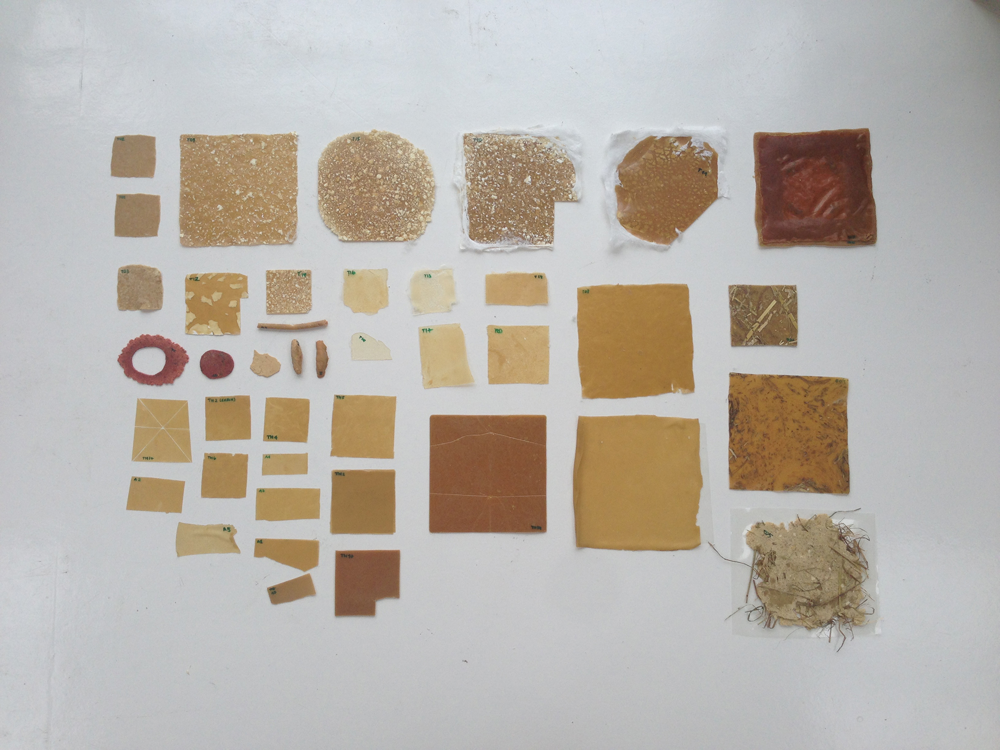
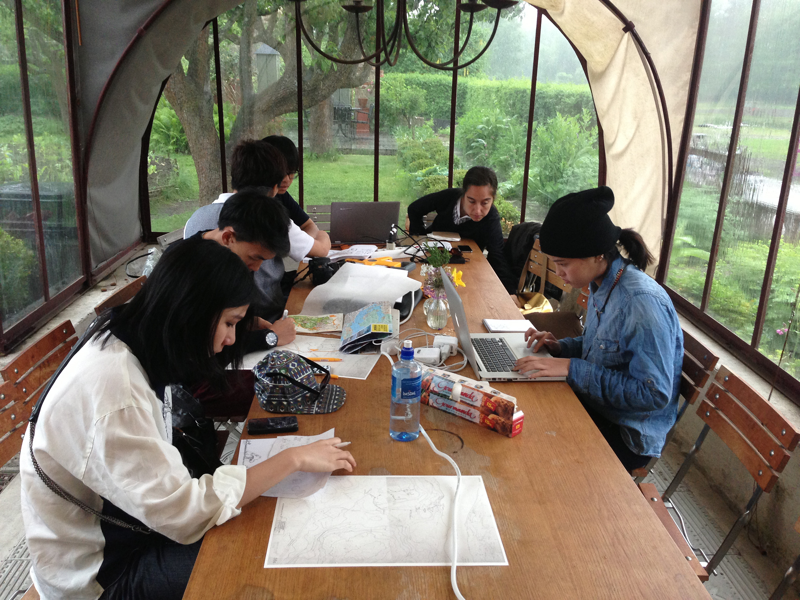
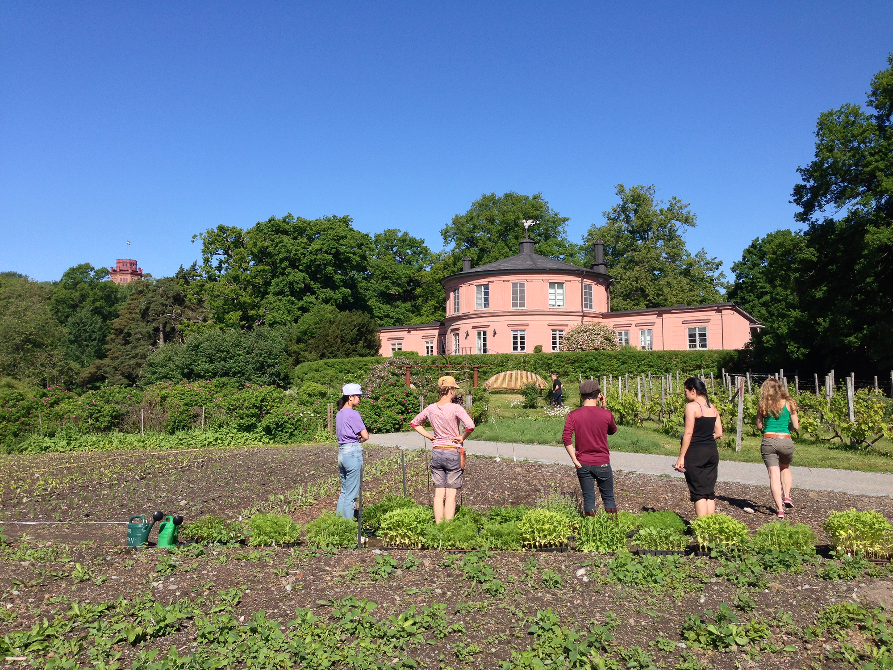
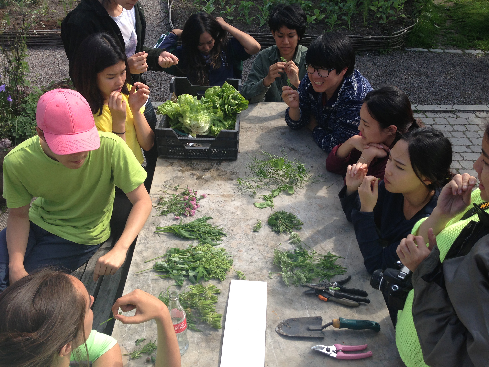
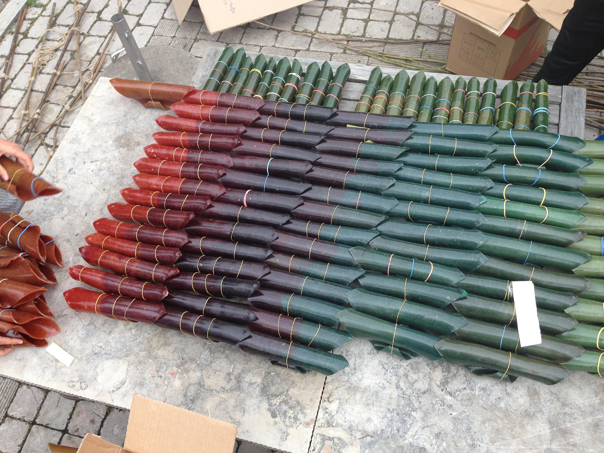
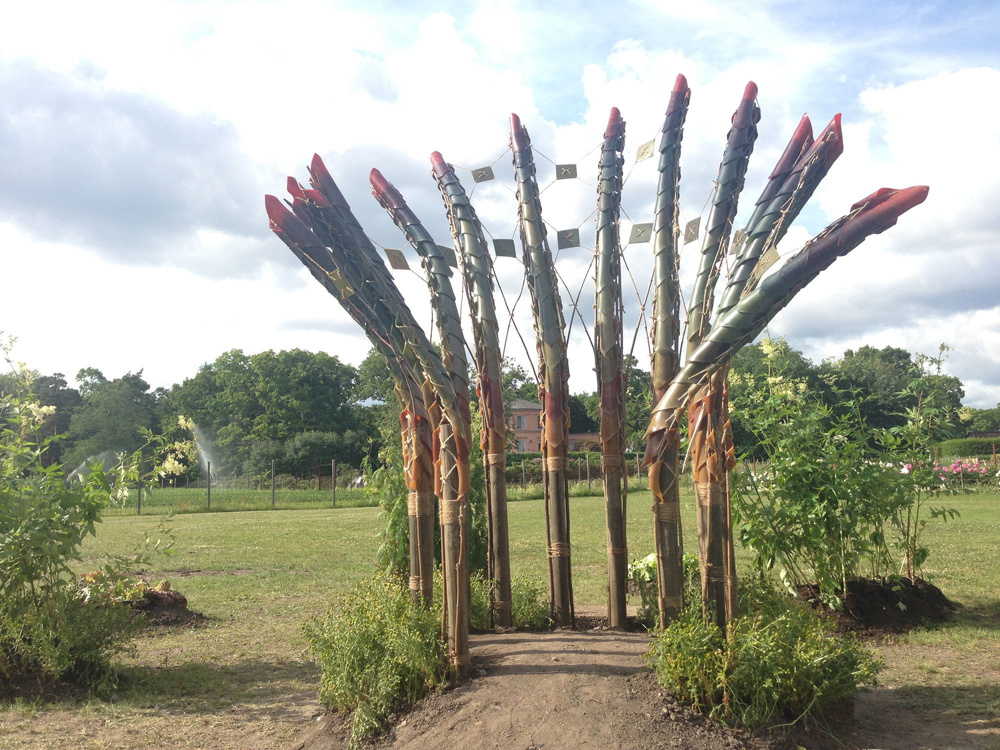

Vaults of Pulp is a visionary project on the Garden of Rosendal and Royal Institute of Technology in Stockholm that explores the possibilities of using renewable materials in the cultivation, processing and consumption of biodynamic vegetables.
Project information:http://www.spacepopular.com/Architecture/vaults-of-pulp
     
////////////////////////////////////////////////////